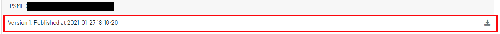

Documents
Lorsque toutes les variables obligatoires au niveau du PSMF sont renseignées, il est possible de le publier une nouvelle version du document. La publication se fait en deux étapes :
- Enregistrement du versionning du PSMF. Un commentaire peut être saisi et les
informations suivantes sont tracées :
- La date de la publication de la version,
- Un Commentaire,
- L’auteur (Login d’utilisateur) de la publication de la version,
- Une liste de modifications depuis la dernière version sur des variables dans toust le document
- Une liste de modifications depuis la dernière version concernant les sections du Template du document,
- L’URI du PDF sur le serveur,
- Publication du PDF et sur le serveur.
1. Liste des documents
La liste des documents est classée par client. Il indique le numero de version, la date de publication et le lien à télécharger en pdf.

- Télécharger le document psmf au format pdf.